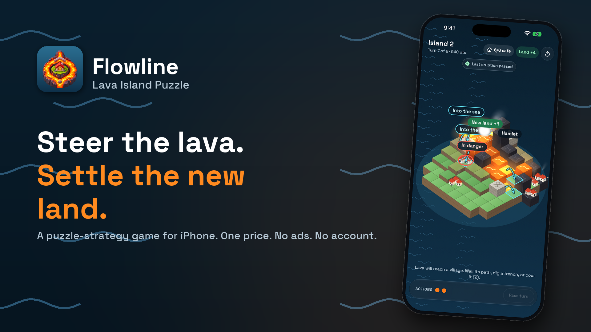
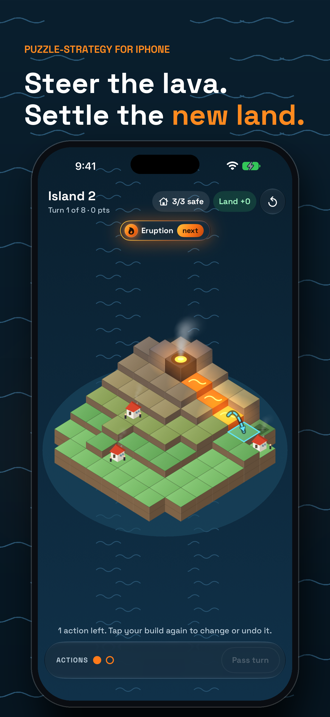
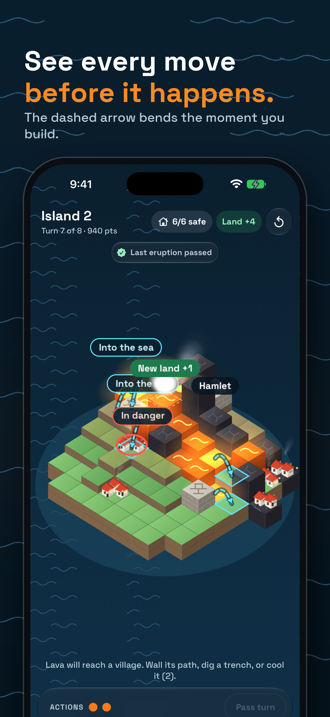
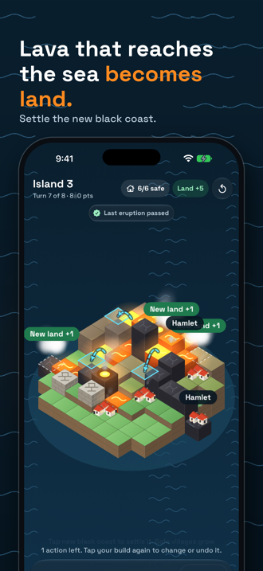
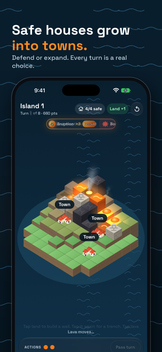
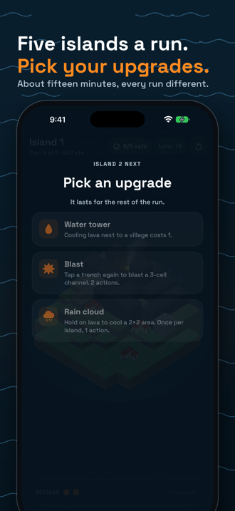
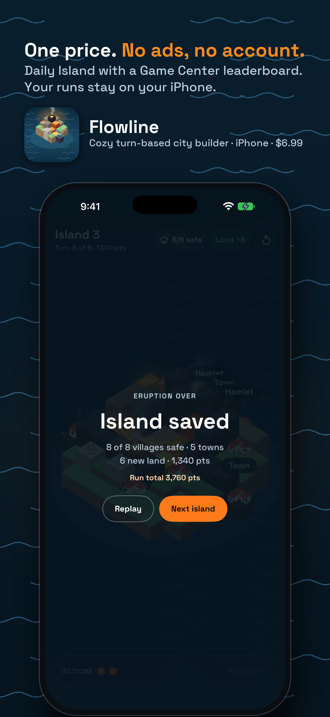
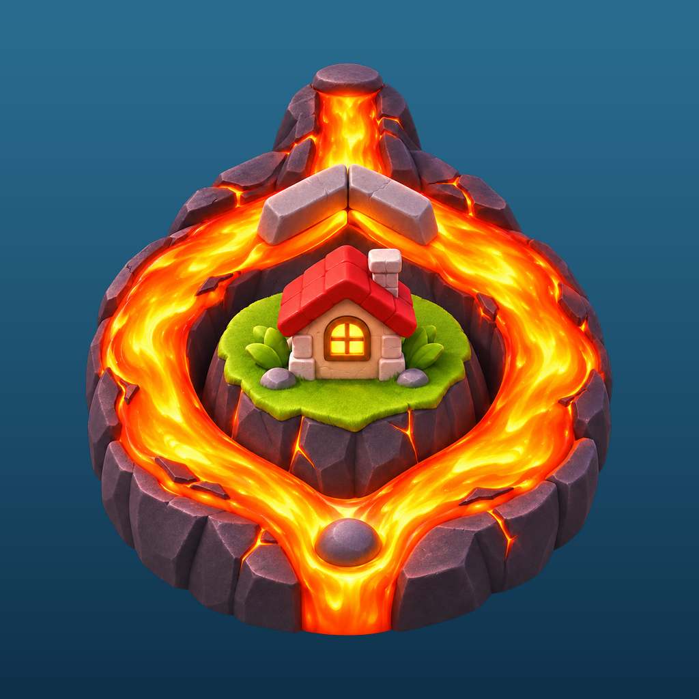
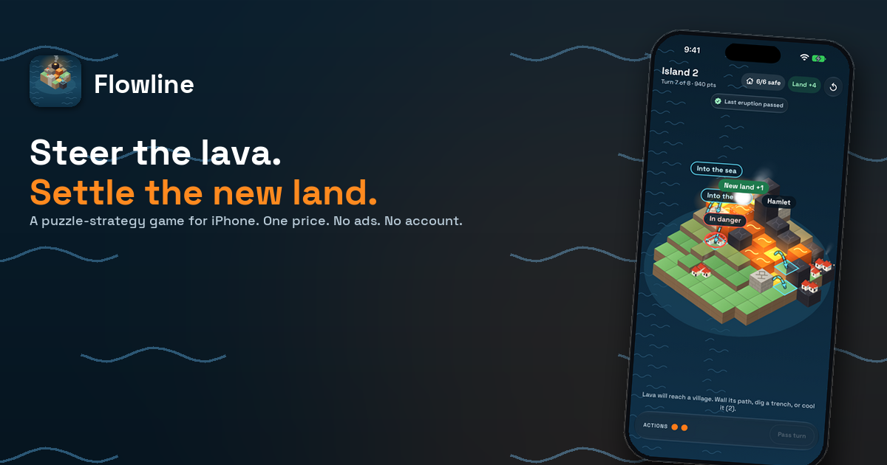

Press kit
Flowline: Lava Island Puzzle · iPhone
Flowline is a premium puzzle-strategy game for iPhone. A volcano erupts on a tiny island; you build walls, dig trenches and cool lava to keep it out of your villages and steer it into the sea, where it becomes land you can settle. Two actions a turn, eight turns an island, five islands a run. Free to try, one optional unlock, no ads, no account.


Fact sheet
- Name
- Flowline (App Store: "Flowline: Lava Island Puzzle")
- Tagline
- Steer the lava. Settle the new land.
- Genre
- Turn-based puzzle-strategy with light city building
- Platform
- iPhone, portrait, one-handed. iOS 18 or later.
- Price
- Free to try: islands 1–3 and the Daily Island. One $0.99 purchase, “Full Game + Endless Mode”, adds islands 4–5 and Endless, with Family Sharing. No ads, no subscription, no account, no tracking.
- Modes
- Run (5 islands with upgrades), Daily Island (Game Center leaderboard), Endless
- Run length
- About 15 minutes; 8 turns an island
- Age rating
- 4+
- Developer
- Jake Williams, independent
- Contact
- info@jakeawilliams.com
Description
Short (about 50 words)
Flowline is a turn-based puzzle-strategy game for iPhone. A volcano erupts on a tiny island. With two actions a turn you build walls, dig trenches and cool lava to steer it past your villages and into the sea, where it hardens into land you can settle. The threat becomes the terrain, and the terrain becomes your city.
Long (about 120 words)
Every island in Flowline lasts eight turns. Each turn the lava moves one tile per front, always downhill, and a dashed arrow shows where it will go before it happens. You get two actions to change its mind: tap land for a wall, tap again for a trench, tap lava to cool it, tap new black coast to found a house. Eruptions grow on turns two, four and six, and a lava bomb is marked a turn before it lands next to your best town. Lava that reaches the sea becomes new land; houses you keep safe grow into hamlets and towns. A run is five islands with an upgrade after each, about fifteen minutes. The Daily Island is the same for everyone, with a Game Center leaderboard. The first three islands of every run and the Daily are free; one $0.99 purchase adds islands four and five and Endless. No ads, no account.
Screenshots
The App Store set, 1320×2868, each a real capture from the game framed with its headline. Click to download.

Steer the lava
The preview
New land
Towns
Upgrades
Free to try


Icon and art

App icon
Social card


Video
A 26-second capture of the first island, played by the game's own bot: lava moving, a village saved by one tile, new land forming and a town growing. Download (886×1920 H.264, no sound).
Colours and type
- Sea navy#0A1F2E
- Lava#FF8A1F
- Lava front#FFC23A
- Preview cyan#62E4FF
- New land#9DF0BF
- Wall stone#D3CEC2
Type: Space Grotesk (SIL Open Font License).
Use
Everything on this page may be used to write about or show Flowline. Captures you take of your own play are yours. Please don't alter the icon. For review codes or questions, email info@jakeawilliams.com.